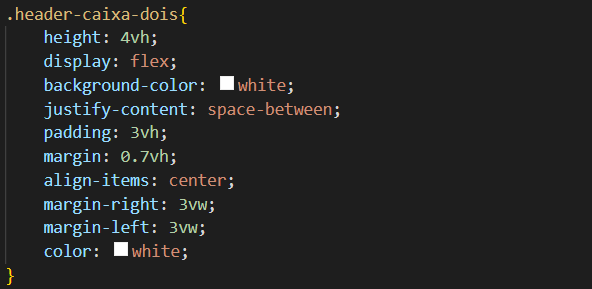

Principais projetos
Projeto Phyton
Nesta card esta um dos principais projetos de programação em PHYTON, e explicação!

Nas duas primeiras linhas temos as variaveis e o que podemos guardar nelas, neste caso o 'float' serve para poder guardar uma variavel com virgula, por exemplo "3,14", e o 'input' serve para que possamos escrever o valor e guardar na variavel, tanto 'a' quanto 'b'. Criei depois uma variavel com o nome de 'MEDIA' que serve para calcular uma media ponderada, no caso para calcular a nota de um aluno, um exemplo de entrada seria os valores a=(5.0) e b=(7.1) e a variavel media calcularia 'a * 3.5' somando com 'b * 7.5' e depois dividiria tudo por 11. O resultado sera impresso através do codigo da ultima linha, o 'print' que neste caso, imprimirá o texto "MEDIA =" e os 5 numeros depois da virgula, e tambem o resultado que esta no calculo da variavel 'MEDIA' fazendo os calculos, o que será impresso: "MEDIA = 6.43182"
Proeto HTML
Nesta card esta um dos principais projetos de programação em HTML, e explicação!

Este projeto fizemos um site indvidulmente, eu pensei em fazer uma loja de compras ou algo do tipo, mas pensei melhor e fiz um site sobre empresa do meu pai, falei sobre as coisas que fazemos na empresa, sobre o que fazemos, separei em cards, como na imagem a cima fiz sobre usinagem 3d, montagem e pintura, sobre personalização e também sobre o banho das peças fiz com as cores intercalando entre azul e branco, usei bastante o comando 'div' e usei meu conhecimento para criar o saite, me sinto satisfeito com meu trabalho.
Projeto CSS
Nesta card esta um dos principais projetos de programação em CSS, e explicação!
O CSS é o estilo de codigo que usamos para estilização do leyout serve para modelar onde vai ficar cada coisa e usar cores também. Os códicgos de CSS que eu mais uso sao, 'displey flex', 'Justfy-conted', 'aling-items' e background-color', a função do Displey flex, como o nome ja diz, é deixar o meu item principal flexivel, o Justfy-conted eu uso pra alinhar os items ao centro da pagina ou pra alinhar sobre uma linha, o codigo aling-items, como o nome também ja diz eu uso ele para alinhar os items mas dessa vez no centro do lado da pagina, e o ultimo codigo background-color uso para colocar a cor que desejo na tela de fundo.